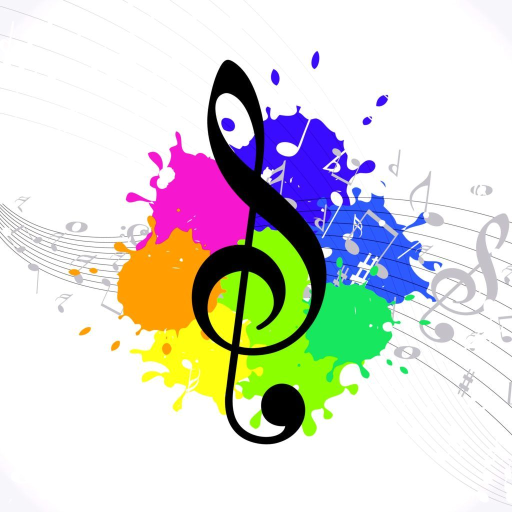
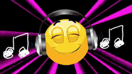

La Musica
Dayanna Cardenas Alfonso
Significado:
 conoce como música a la combinación ordenada de ritmo, melodía y
armonía que resulta agradable a los oídos. Por su carácter inmaterial,
la música se considera un arte temporal o del tiempo, al igual que la literatura.
En el sentido restrictivo, la música es el arte de coordinar y transmitir efectos sonoros,
armoniosos y estéticamente válidos, los cuales son generados a través de la voz o de
instrumentos musicales.
conoce como música a la combinación ordenada de ritmo, melodía y
armonía que resulta agradable a los oídos. Por su carácter inmaterial,
la música se considera un arte temporal o del tiempo, al igual que la literatura.
En el sentido restrictivo, la música es el arte de coordinar y transmitir efectos sonoros,
armoniosos y estéticamente válidos, los cuales son generados a través de la voz o de
instrumentos musicales.
PARA MI

La musica es la combinacion se varios sonidos que despiertan el alma y es una forma en
la que uno puede tener varios sentimientos encontrados segun el ritmo como por ejemplo:
- Vallenato:Expresa dolor sentimiento
- Rancheras: Estas son para las personas que se encuentren despechadas
- Electronica: Esta expresa alegria, energia y entusiasmo
- El pop: Es como musica que lo relaja
Esto es segun mi punto de vista.